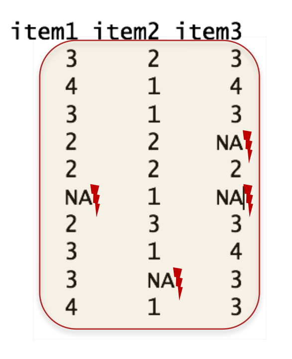
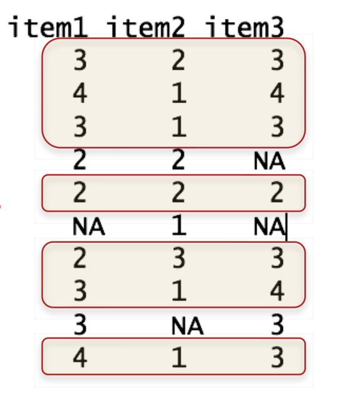

7 Tests, Zusammenhangsmaße und Regression
7.1 Statistisches Testen
- Ziel ist mit Stichprobendaten allgemein gültige Aussagen über die Grungesamtheit treffen zu können. Dazu werden Hypothesentests durchgeführt häufig in Form von Signifikanztests.
Allgemeines Vorgehen bei Signifikanztests:
- Null- und Alternativhypothese formulieren (\(H_0\ und\ H_a\))
- Wahl eines passenden Tests (z.B.
t-Test, …) - Bestimmung des Signifikanzniveaus \(\alpha\)
- Berechnung des Wertes der Beobachtung (z.B.
t-Wert, …) - Treffen der Testentscheidung
7.1.1 \(\chi^2\)-Test
- Gleichverteilungstest - sind Kategorien gleich häufig?
- \(H_0\): Kategorien sind gleichhäufig
- \(H_a\): Kategorien sind nicht gleichhäufig
- Unanghängigkeitstest - sind zwei nominale Merkmale unabhängig voneinander?
- \(H_0\): Merkmale sind unabhängig
- \(H_a\): Merkmale sind abhängig
Die Funktion chisq.test() berechnet je nach Eingabe einen entsprechenden Test. Eingabeparameter sind dabei im Format von table():
- Gleichverteilungstest:
table(x)
- Unanghängigkeitstest:
table(x, y)
Beispiel
Gleichverteilungstest:
tab <- table(df_yoga$gruppe)
chisq.test(tab)
Chi-squared test for given probabilities
data: tab
X-squared = 4.55, df = 2, p-value = 0.1028Unanghängigkeitstest:
7.1.2 t-Test
- Varianten des t-Tests:
- Einstichproben t-Test: Vergleich eines Mittelwerts mit einer Konstante
- \(H_0\): Mittelwert weicht nicht von Konstante ab
- \(H_a\): Mittelwert weicht von Konstante ab
- Zweistichproben t-Test: Vergleich von zwei Mittelwerten aus ab- oder unabhängigen Stichproben
- \(H_0\): Mittelwerte weichen nicht voneinander ab
- \(H_a\): Mittelwert weichen voneinander ab
- Einstichproben t-Test: Vergleich eines Mittelwerts mit einer Konstante
Alle Varianten des t-Tests werden mit t.test() berechnet.
- Zwei Möglichkeiten der Dateneingabe
t.test(Werte1, Werte2)t.test(Werte ~ Faktor)
- Optionale Argumente:
alternative: Richtung der Testung ("two.sided", "greater", "less")mu: Konstante, gegen die getestet werden sollpaired: unabhängige (FALSE) oder abhängige (TRUE) Stichproben?var.equal: Annahme von Varianzgleichheit gegeben (ja =TRUE)?conf.level: Konfidenzniveau
Beispiel
t-Test - Einstichprobentest
t.test(df_ex$Revise, mu = 5, alternative = "greater")
One Sample t-test
data: df_ex$Revise
t = 8.4094, df = 101, p-value = 1.395e-13
alternative hypothesis: true mean is greater than 5
95 percent confidence interval:
16.41727 Inf
sample estimates:
mean of x
19.22549 t-Test - Zweistichprobentest - abhängige Stichproben
t.test(df_ex$Note, df_ex$Note_2, paired = TRUE)
Paired t-test
data: df_ex$Note and df_ex$Note_2
t = 3.3339, df = 101, p-value = 0.001198
alternative hypothesis: true mean difference is not equal to 0
95 percent confidence interval:
0.2382293 0.9382413
sample estimates:
mean difference
0.5882353 t-Test - Zweistichprobentest - unhängige Stichproben
t.test(df_ex$Revise ~ df_ex$bestanden)
Welch Two Sample t-test
data: df_ex$Revise by df_ex$bestanden
t = 4.4799, df = 96.44, p-value = 2.053e-05
alternative hypothesis: true difference in means between group bestanden and group durchgefallen is not equal to 0
95 percent confidence interval:
6.707692 17.380155
sample estimates:
mean in group bestanden mean in group durchgefallen
23.35821 11.31429 7.1.3 ANOVA
Vergleich von Mittelwerten von mehr als zwei Gruppen:
- Abhängige (within ANVOA) oder unabhängige (between ANOVA) Stichproben?
- Post-hoc-Tests für genauere Gruppenvergleiche
- Mehrfaktorielle ANOVA für mehrere unabhängige Variablen und deren Interaktion
Paket ez
Varianzanalysen lassen sich in R auf viele (auch umständliche Arten) berechnen. Das Paket ez bietet mit der Funktion ezANOVA() eine benutzerfreundliche Möglichkeit zum Durchführen von ANOVAs
Wichtige Argumente:
data: Dataframedv: Abhängige Variablewid: Variable, die die Fälle im Dataframe eindeutig unterscheidet (ID-Variable)between: Zwischensubjektfaktoren, anzugeben als Liste mit .(Faktor 1, Faktor 2, …)within: Innersubjektfaktoren, anzugeben als Liste mit .(Faktor 1, Faktor 2, …)type: Art der Quadratsummenzerlegung (Typ 2 ist Default, Typ 3 ist der Standard von SPSS)
Beispiel
Einfaktorielle ANOVA - Between-Faktor
ezANOVA(data = df_yoga_clean, dv = zufri, wid = vp, between = gruppe, type = 2)
Coefficient covariances computed by hccm()
$ANOVA
Effect DFn DFd F p p<.05 ges
1 gruppe 2 113 3.610455 0.0302038 * 0.06006367
$`Levene's Test for Homogeneity of Variance`
DFn DFd SSn SSd F p p<.05
1 2 113 0.7027865 71.73687 0.553515 0.5764761 Post-hoc-Tests
Post-hoc-Tests für paarweise Gruppenvergleiche können mit pairwise.t.test(x, g, p.adjust.method = "…", paired = …, …) ausgegeben werden.
x: Vektor der abhängigen Variableg: Vektor der unabhängigen Variable (Gruppe)p.adjust.method: Korrekturmethode für multiples Testen?p.adjustpaired: Innersubjekt(within)- (TRUE) oder Zwischensubjekt(between)faktoren (FALSE)?
pairwise.t.test(df_yoga_clean$zufri, df_yoga_clean$gruppe,
p.adjust.method = "bonferroni", paired = FALSE)
Pairwise comparisons using t tests with pooled SD
data: df_yoga_clean$zufri and df_yoga_clean$gruppe
kontroll pilates
pilates 1.000 -
yoga 0.062 0.043
P value adjustment method: bonferroni Einfaktorielle ANOVA: Within-Faktoren
- z.B. „Unterscheiden sich die Zufriedenheitswerte der Teilnehmenden vor und nach dem Training?“
- „Problem“: in diesem Datensatz haben wir keine within-Faktoren -> angst sei die Zufriedenheitsmessung vor der jeweiligen Intervention (Gruppe) -> Dadurch kann der Faktor Zeit mit aufgenommen werden
df_yoga <- read.table("data/YogaPilates.txt", header = T)
head(df_yoga, n=5)
vp geschl alter gruppe zufri angst
1 AA21 w 37 yoga 5 1
2 AW14 m 31 pilates 4 4
3 BA55 w 38 yoga 4 2
4 BA76 m 35 yoga 5 2
5 BP45 w 23 pilates 4 1# Zufriedenheit t_1
df_yoga$zufri_t1 <- df_yoga$angst
# Zufriedenheit t_2
df_yoga$zufri_t2 <- df_yoga$zufri
head(df_yoga, n=5)
vp geschl alter gruppe zufri angst zufri_t1 zufri_t2
1 AA21 w 37 yoga 5 1 1 5
2 AW14 m 31 pilates 4 4 4 4
3 BA55 w 38 yoga 4 2 2 4
4 BA76 m 35 yoga 5 2 2 5
5 BP45 w 23 pilates 4 1 1 47.2 Statistisches Testen
Einfaktorielle ANOVA: Within-Faktoren
Achtung!: Für ANOVA müssen auch within-Faktoren ins Long-Format gebracht werden
library(reshape2)
df_yogaL <- melt(df_yoga,
id.vars = c("vp", "geschl", "alter", "gruppe", "angst","zufri"),
variable.name = "Zeitpunkt",
value.name = "Zufriedenheit")
head(df_yogaL, n=5)
vp geschl alter gruppe angst zufri Zeitpunkt
1 AA21 w 37 yoga 1 5 zufri_t1
2 AW14 m 31 pilates 4 4 zufri_t1
3 BA55 w 38 yoga 2 4 zufri_t1
4 BA76 m 35 yoga 2 5 zufri_t1
5 BP45 w 23 pilates 1 4 zufri_t1
Zufriedenheit
1 1
2 4
3 2
4 2
5 1Einfaktorielle ANOVA: Within-Faktoren
- Deskriptive Analysen
library(psych)
describeBy(df_yogaL$Zufriedenheit, group = df_yogaL$Zeitpunkt)
Descriptive statistics by group
group: zufri_t1
vars n mean sd median trimmed mad min max range
X1 1 120 2.49 1.33 2 2.36 1.48 1 5 4
skew kurtosis se
X1 0.49 -0.95 0.12
---------------------------------------------
group: zufri_t2
vars n mean sd median trimmed mad min max range
X1 1 116 3.54 1.03 4 3.59 1.48 1 5 4
skew kurtosis se
X1 -0.42 -0.56 0.1- Vergleiche Output der between-ANOVA für die Interpretation der Werte
- Bei mehr als zwei Stufen des Innersubjektfaktors wird der Mauchly-Test (Test auf Sphärizität) mit ausgegeben
7.3 Zusammenhangsmaße
Kovarianz:
- nichtstandardisiertes Zusammenhangsmaß
- monotoner Zusammenhang
Korrelationskoeffizient (nach Bravais-Pearson):
- standardisiertes Zusammenhangsmaß
- linearer Zusammenhang
- Variablen mindestes intervallskaliert
Beispieldatasatz
Wie hängen die Itemantworten zusammen?
df_exam <- read.table("data/Daten.txt", header = TRUE)
head(df_exam, c(5,8))
Person item1 item2 item3 item4 item5 item6 item7
1 1 3 2 3 2 2 1 4
2 2 4 1 4 3 1 1 4
3 3 3 1 3 3 1 1 3
4 4 2 2 2 2 2 2 2
5 5 2 2 2 2 1 1 3Kovarianz und Korrelation - zwei Variablen
- Für die Berechnung der Korrelation wird
cor()verwendet, für die Berechnung der Kovarianzcov()
- Argumente bei
cor(x, y, method = "…", use = "…")xundy: Datenvektoren
method: Welche Korrelation soll berechnet werden?- Produkt-Moment-Korrelation (
"pearson"), Rangkorrelation \(\rho\) ("spearman") oder Rangkorrelation \(\tau\) ("kendall")
- Produkt-Moment-Korrelation (
use: Umgang mit fehlenden Werten (siehe nächste Folie)
use = "…"regelt den Umgang der Korrelationsfunktionen mit fehlenden Werten"everything": Kein Umgang mit fehlenden Werten \(\rightarrow\) bei einzelnen fehlenden Werten wird keine (einzige) Korrelation berechnet (Ergebnis:NA)"pairwise": Korrelationen werden jeweils mit den vollständigen Fällen pro Variablenpaar berechnet (paarweiser Ausschluss)"complete": Korrelationen werden nur aus in allen Variablen vollständigen Fällen berechnet (fallweiser Ausschluss)
| everything | pairwise | complete |
|---|---|---|
|  |  |
 |
Funktion cor.test()
cor.test(x, y, method = "…", use = "…", alternative = "…", conf.level = …, …)für Inferenzstatistik bei Korrelationenx, y, method, use: Siehecor()alternative: Ist die Testrichtung…- Ungerichtet (default):
"two.sided" - einseitig: Positive Korrelationshypothese
"greater" - einseitig: Negative Korrelationshypothese
"less"
- Ungerichtet (default):
conf.level: Konfidenzniveau (1 - \(\alpha\))default: 0.95
Beispiel
Korrelation item1, item2
cor.test(df_exam$item1, df_exam$item2, method = "pearson",
alternative = "less", conf.level = .99)
Pearson's product-moment correlation
data: df_exam$item1 and df_exam$item2
t = -3.4112, df = 8, p-value = 0.004603
alternative hypothesis: true correlation is less than 0
99 percent confidence interval:
-1.0000000 -0.1396423
sample estimates:
cor
-0.7698004 Produkt-Moment-Korrelation, Hypothese: negative Korrelation, alpha = 1%
cor.test(df_exam$item1, df_exam$item2, method = "pearson",
alternative = "less", conf.level = .99)
Pearson's product-moment correlation
data: df_exam$item1 and df_exam$item2
t = -3.4112, df = 8, p-value = 0.004603
alternative hypothesis: true correlation is less than 0
99 percent confidence interval:
-1.0000000 -0.1396423
sample estimates:
cor
-0.7698004 7.3.1 Matrizen
Werden dataframes (oder Teile dessen) in cov() oder cor() eingefügt, werden Kovarianz- und Korrelationsmatrizen ausgegeben:
cov(df_exam[, 2:4])
item1 item2 item3
item1 0.6666667 -0.4444444 0.3333333
item2 -0.4444444 0.5000000 -0.2222222
item3 0.3333333 -0.2222222 0.4444444
cor(df_exam[, c("item1", "item2", "item3")], method = "pearson")
item1 item2 item3
item1 1.0000000 -0.7698004 0.6123724
item2 -0.7698004 1.0000000 -0.4714045
item3 0.6123724 -0.4714045 1.0000000Funktion corr.test()
corr.test()(Paketpsych) liefert inferenzstatistische Berechnungen auch für Korrelationsmatrizen.corr.test(df, method = "…", adjust = "…", alpha = "…")df, method: Siehecor()adjust: Methode zur \(\alpha\)-Fehler-Adjustierung"none", "bonferroni", …- Für weitere siehe
?p.adjustund?corr.test
alpha: Signifikanzniveau \(\alpha\)
library(psych)
corr.test(df_exam[ ,2:4], method = "pearson", adjust = "bonferroni")
Call:corr.test(x = df_exam[, 2:4], method = "pearson", adjust = "bonferroni")
Correlation matrix
item1 item2 item3
item1 1.00 -0.77 0.61
item2 -0.77 1.00 -0.47
item3 0.61 -0.47 1.00
Sample Size
[1] 10
Probability values (Entries above the diagonal are adjusted for multiple tests.)
item1 item2 item3
item1 0.00 0.03 0.18
item2 0.01 0.00 0.51
item3 0.06 0.17 0.00
To see confidence intervals of the correlations, print with the short=FALSE optionExtraktion von Werten
- Mit $ können Werte aus der Berechnung extrahiert werden
- Dafür Korrelationsmatrix als Objekt speichern
- $se für Extraktion der Standardfehler
- $ci für Extraktion der Konfidenzintervalle
- $p für Extraktion der p-Werte
- $t für Extraktion der t-Werte
Beispiel
Definition eines Objekts mit Inferenzstatistik für df_exam
Ausgabe Konfidenzintervalle
7.4 Lineare Regressionsmodelle
- Ziel ist ein Kriterium (abhängige Variable) durch einen Prädiktor (unabhängige Variable) oder einer Kombination aus Prädikatoren für neue Prädikatorenwerte vorherzusagen bzw. den Zusammenhang dieser zu untersuchen.
Allgemeines Vorgehen:
- Abhängige und unabhängige Variablen aus Hypothesen ableiten
- Skalenniveaus der Variablen bestimmen
- Erwarteten Zusammenhang bestimmen
- Passendes Regressionsverfahren wählen
- Vorraussetzungen prüfen
- Regressionsmodell berechnen
- Interpretation der Regressionsanalyse
Lineare Regressionsmodelle
Für lineare Regressionen sind folgende Voraussetzungen zu überprüfen:
- Es existiert ein linearer Zusammenhang
- Erwartungswert der Residuen ist Null
- Varianzhomogenität der Residuen (Homoskedastizität)
- Die Residuen sind nicht miteinander Korreliert (Autoregression)
- Die Residuen sind nicht mit den unabhängigen Variablen korreliert und die unabhängige Variable ist deterministisch(z.B. Omitted-Variable-Bias)
- Normalverteilung der Residuen
7.4.1 Modelldefinition
- Um eine Regression in R zu rechnen, muss man anhand der vorliegenden Variablen ein Regressionsmodell spezifizieren
- Regressionsmodelle werden in sogenannten Formel-Objekten definiert
- Struktur: Abhängige Variable(n) ~ Unabhängige Variable + Unabhängige Variable + …
- Mehrere Variablen werden mit + verbunden
- Variablenbezeichnungen entsprechend anpassen
- item1 soll durch item2 und item3 vorhergesagt werden
Beispiel Modelldefinition
7.4.2 Modellschätzung
- Anhand des definierten Regressionsmodells und der vorhandenen Daten kann R nun die Modellparameter (inkl. Modellpassung) schätzen
- Lineare Regressionsmodelle werden mit
lm(formula = …, data = …)geschätzt:formula: Definiert das Modelldata: dataframe, der die Variablen enthält
lm()sollte für die weiteren Berechnungen als Objekt gesichert werden
Beispiel Modellschätzung
Modelldefinition
Modellschätzung und Sicherung in fit1
Modell anzeigen
fit1
Call:
lm(formula = model1, data = df_exam)
Coefficients:
(Intercept) item2 item3
2.8929 -0.7143 0.3929 - Mit
summary()lassen sich detaillierte Informationen zum Regressionsmodell ausgeben:
summary(fit1)
Call:
lm(formula = model1, data = df_exam)
Residuals:
Min 1Q Median 3Q Max
-0.75000 -0.33036 -0.08929 0.33036 0.64286
Coefficients:
Estimate Std. Error t value Pr(>|t|)
(Intercept) 2.8929 1.1752 2.462 0.0434 *
item2 -0.7143 0.2832 -2.523 0.0397 *
item3 0.3929 0.3003 1.308 0.2322
---
Signif. codes:
0 '***' 0.001 '**' 0.01 '*' 0.05 '.' 0.1 ' ' 1
Residual standard error: 0.5297 on 7 degrees of freedom
Multiple R-squared: 0.6726, Adjusted R-squared: 0.5791
F-statistic: 7.191 on 2 and 7 DF, p-value: 0.020087.4.3 Modellvergleich
- Zwei genestete Modelle können mit
anova(fit1, fit2)miteinander verglichen werdenfit1: Ausgangsmodell (restringiertes Modell)fit2: Erweitertes Modell (mit zusätzlichen Prädiktoren)
Beispiel Modellvergleich
Modelldefinition und Schätzung
model1 <- item1 ~ item2 + item3
model2 <- item1 ~ item2 + item3 + item4
fit1 <- lm(model1, df_exam)
fit2 <- lm(model2, df_exam)Modellvergleich, fit1 + fit2
7.5 Ergänzungen
7.5.2 Weitere Korrelationen
- Mit dem Paket
psychkönnen zudem- Partialkorrelationen (
partial.r()), - tetrachorische (
tetrachoric()), - polychorische (
polychoric()), - biserale (
biserial()) - und polyseriale (
polyserial()) Korrelationen berechnet werden
- Partialkorrelationen (
- Mit dem Paket
ppcorkönnen Semipartialkorrelationen berechnet werden
7.5.3 Standartisierte und unstandartisierte Regressionkoeffizienten
- Mit
coefficients()oder\$coefficientslassen sich die unstandardisierten Regressionskoeffizienten ausgeben - Mit
lm.beta()aus dem Paket QuantPsyc lassen sich standardisierte Regressionskoeffizienten ausgeben
# Unstandartisierte Regressionskoeffizienten
coefficients(fit1)
(Intercept) item2 item3
2.8928571 -0.7142857 0.3928571
# Ausgabe
fit1$coefficients
(Intercept) item2 item3
2.8928571 -0.7142857 0.3928571
# Standartisierte Regressionskoeffizienten
QuantPsyc::lm.beta(fit1)
item2 item3
-0.6185896 0.3207665 7.5.4 Vorhergesagte Werte
predict(),fitted.values()oder\$fitted.valuesgibt die vorhergesagten Werte für jeden Datenpunkt als Vektor aus:
# Vorhersage Werte, fit1
predict(fit1)
1 2 3 4 5 6
2.642857 3.750000 3.357143 2.250000 2.250000 3.357143
7 8 9 10
1.928571 3.750000 3.357143 3.357143
# Alternative 1
fitted.values(fit1)
1 2 3 4 5 6
2.642857 3.750000 3.357143 2.250000 2.250000 3.357143
7 8 9 10
1.928571 3.750000 3.357143 3.357143
# Alternative 2
fit1$fitted.values
1 2 3 4 5 6
2.642857 3.750000 3.357143 2.250000 2.250000 3.357143
7 8 9 10
1.928571 3.750000 3.357143 3.357143 7.5.5 Residuen
resid(),residuals()oder\$residualsgibt die unstandardisierten Residuen pro Datenpunkt ausrstandard()gibt die standardisierten Residuen aus
7.5.6 Modelldefinition
- Spezielle Modelle:
- Modell ohne Prädiktoren (Nullmodell): AV ~ 1
- Modell ohne Intercept (Konstante): AV ~ 0 + UV1 + …
- Interaktionsterme (Moderation):
- AV ~ UV1 + UV2 + UV1*UV2
- Statt \(*\) kann auch \(:\) verwendet werden
7.5.7 Hinweise zu weiteren Regressionsmodellen in R
- Literatur:
- Fox, J., & Weisberg, S. (2011). An R companion to applied regression. London: SAGE.
- James, G., Witten, D., Hastie, T., & Tibshirani, R. (2013). An introduction to statistical learning: With applications in R. Springer texts in statistics. New York: Springer.
- In R sind viele weitere Verfahren zur Modellselektion, -schätzung und -bewertung umgesetzt wie etwa:
- Bootstrapping
- Kreuzvalidierung
- Shrinkage (Lasse/Ridge) Regression
- Robust Regression
- Power Analyse
7.5.8 General Linear Model (GLM)
glm(forumla, family, data)
- Generalisierte lineare Modelle als Verallgemeinerung des linearen Modells \(\rightarrow\) Breite Einsatzmöglichkeiten
formula: Wie beilm()data: Wie beilm()family:Definiert die Zufallsverteilung von Y und die Linkfunktion
- Beispiele:
- GLM mit Normalverteilung und ohne besondere Linkfunktion (
familiy = gaussian(link = "identity")) \(\rightarrow\) Entsprichtlm() - GLM mit Binomialverteilung und logistischer Linkfunktion (
family = binomial(link = "logit")) \(\rightarrow\) Binär-logistische Regression
- GLM mit Normalverteilung und ohne besondere Linkfunktion (
7.5.9 Mediation und SEM
- Paket
lavaan- Ständig weiterentwickeltes Paket zur Schätzung von Pfad- und Strukturgleichungsmodellen in R
- Ermöglicht auch Bootstrapping-Konfidenzintervalle für indirekte Effekte
- Ausführliche Dokumentation mit Beispielcodes:
7.5.10 Linear Mixed Model (LMM)
- Paket
lme4- Liefert eine breite und gut erprobte Palette an Werkzeugen für linear mixed models (Hierarchische lineare Modelle; Mehrebenenmodelle)
- Siehe: Bates, D., Mächler, M., Bolker, B., & Walker, S. (2015). Fitting Linear Mixed-Effects Models Using lme4. Journal of Statistical Software, 67(1).
- Paket
lmerTest- Reicht Signifikanztests nach, die in lme4 standardmäßig nicht implementiert sind
- https://cran.r-project.org/web/packages/lmerTest/index.html